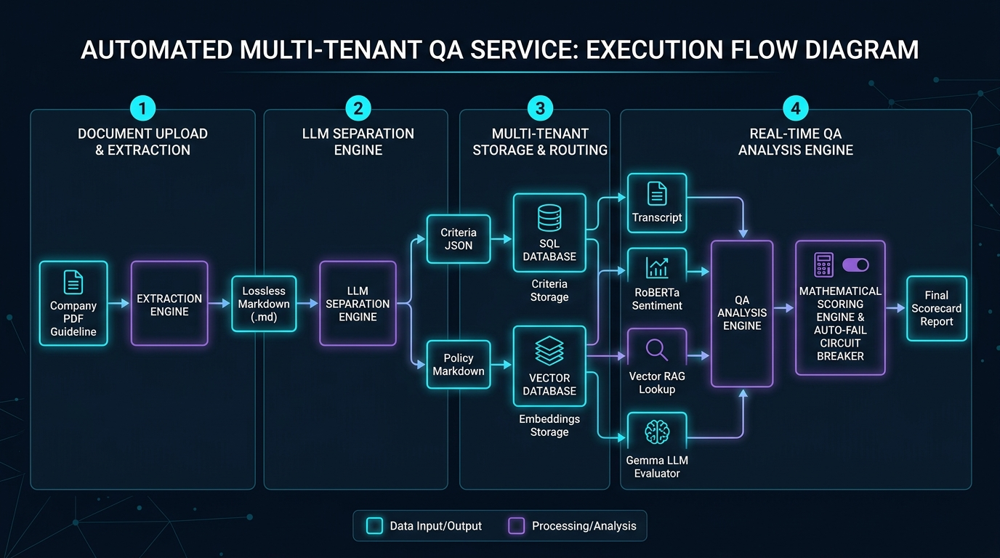

Phase 1 Enterprise Multi-Tenant QA System Architecture
An end-to-end blueprint transforming a single-tenant script into an enterprise-grade multi-tenant QA engine. Each company configures custom criteria, SLA rules, channel weights, auto-fail conditions, and policy documents.
Extracts tables, percentages, SLA rules, and verbatim spiels into raw Markdown using PyMuPDF / Marker OCR.
Splits Markdown into structured Criteria JSON (scorecards) and Company Policies (RAG context).
Stores company policies & troubleshooting procedures in tenant-isolated collections for real-time similarity lookups.
Combines RoBERTa tone analysis, RAG compliance, and LLM scorecard evaluation with mathematical circuit breakers.
graph TD
%% Tenant Onboarding & Document Ingestion Pipeline
subgraph Onboarding ["1. Company Onboarding & PDF Pipeline"]
A["Company PDF Guideline Upload"] --> B["PDF-to-Markdown Engine
(PyMuPDF / Marker OCR)"]
B --> C["Full Lossless Markdown File (.md)"]
C --> D["LLM Separation Engine
(Gemma / Claude / GPT-4o)"]
D -->|Extract QA Rubrics & SLAs| E["Company Criteria JSON
(Weights, Line Items, Spiels, Auto-Fails)"]
D -->|Extract Knowledge & Policies| F["Company Details Markdown
(SOPs, Policies, Product Specs)"]
E --> G[("Relational Database
PostgreSQL / SQLite")]
F --> H["Text Chunking & MiniLM Embedding"]
H --> I[("Multi-Tenant Vector DB
ChromaDB / Qdrant / Pgvector")]
end
%% Execution & QA Analysis Pipeline
subgraph Execution ["2. Real-time QA Analysis Engine"]
J["Interaction Transcript
(Call / Email / Chat + Timestamps)"] --> K["Channel & Tenant Router
(Load tenant_id config)"]
K --> L["RoBERTa Sentiment & Tone Model
(Detect Tense Moments & Rude Agent Lines)"]
K --> M["Vector RAG Retriever
(Metadata Filtered by tenant_id)"]
M --> N["Retrieve Relevant Policies & Ideal Answers"]
G --> O["Dynamic Prompt Generator
(Inject Channel Criteria & Spiels)"]
L --> P["Gemma / LLM Evaluator"]
N --> P
O --> P
P --> Q["Raw Line-Item Judgments
(PASS / PARTIAL / FAIL + Reasons)"]
Q --> R["Deterministic Math & Circuit Breaker
(Category Weight Blending + Auto-Fail Check)"]
R --> S["Final Interactive QA Report & Dashboard"]
end
style A fill:#1e293b,stroke:#00f2fe,stroke-width:2px
style D fill:#334155,stroke:#4facfe,stroke-width:2px
style I fill:#0f172a,stroke:#10b981,stroke-width:2px
style P fill:#1e1b4b,stroke:#c084fc,stroke-width:2px
style S fill:#064e3b,stroke:#10b981,stroke-width:2px
Step-by-Step PDF to Markdown & LLM Separation Engine
How the system processes complex unstructured company guidelines containing nested tables, percentage categories, channel variations, and spiels into deterministic rules and vector databases.
Standard text extractors lose column alignments, percentage headers, and table grids. We utilize layout-aware parsing libraries to ensure 100% data preservation.
- Primary Tool:
PyMuPDF (fitz)with table rectangle detection orMarker-PDFfor visual layout preservation. - Fallback: Vision LLM (GPT-4o-mini / Gemma 3 Flash Vision) for complex scanned PDF tables.
- Output Guarantee: Formatted Markdown tables preserving headers like Soft Skill Category (25%), Technical Knowledge Category (50%), and Auto Fail Category.
An LLM reads the complete Markdown document and performs zero-shot structured classification using a strict Pydantic / JSON schema.
- Target 1 (Criteria JSON): Extracts category names, weights, channel-specific line items, SLA thresholds (e.g. 3-min hold limit, 20s dead air), verbatim spiels, and auto-fail rules.
- Target 2 (Company Details MD): Extracts operational policies, escalation workflows, billing rules, and troubleshooting guides into clean Markdown sections.
sequenceDiagram
autonumber
participant Admin as Admin / User
participant App as Web Application API
participant Parser as PDF-to-MD Parser
participant LLM as LLM Extractor (Structured Output)
participant DB as SQL Database (Criteria Config)
participant VDB as Vector DB (Company Details Index)
Admin->>App: Upload Company Guideline PDF (e.g., QA_Guideline.pdf)
App->>Parser: Execute Layout-Aware Extraction
Parser-->>App: Return Lossless Markdown Document (.md)
App->>LLM: Pass Markdown with Separation System Prompt
Note over LLM: Evaluates text structure & identifies:
1. Evaluation Criteria & Weights
2. Company Details & SOP Policies
LLM-->>App: Return JSON payload with {criteria: {...}, company_details: [...]}
App->>DB: Save Criteria Config (Tenants, Categories, LineItems, AutoFails)
loop For each Company Detail / Policy Chunk
App->>App: Chunk text & compute MiniLM Embeddings
App->>VDB: Store Vector Embedding with metadata {tenant_id, category}
end
App-->>Admin: Display Confirmation Dashboard & Parsed Criteria Summary
Case Study Deep Analysis of Attached 18-Page QA Form Guideline
Demonstrating how the proposed architecture parses, separates, and structures the exact attached 18-page QA Form Guideline PDF document.
| Category | Weight | Focus Area |
|---|---|---|
| Soft Skill Category | 25% | Branding, spiels, hold/dead air, empathy, rapport. |
| Technical Knowledge | 50% | Paraphrasing, verification, probing, solutioning, ownership. |
| Process Knowledge | 25% | Case notes, Zoho tagging, ticket creation, SLA timeliness. |
| Auto Fail Category | CRITICAL | Discourtesy, call avoidance, fraud, non-FCR, abandonment. |
- Call Line Items: Greeting spiel within 10s, max 3-min hold, 20s max dead air (5s grace period), supervised IVR survey transfer.
- Email Line Items: Response within 10 mins of assignment, daily ticket updates, proper email templates, clear thread history.
- Chat Line Items: 1st response < 30s, message response < 2 mins, max 10-min session cap for non-responsive chats.
Verbatim Greeting:
"Thank you for calling S-NET Communications. My name is _____ how can I help you today?"
Verbatim Closing:
"Thank you for Choosing S-NET and have a great day."
1. Extracted Criteria JSON (Database Entry)
{
"tenant_name": "S-NET Communications",
"channel": "Call",
"category_weights": {
"Soft Skills": 0.25,
"Technical Knowledge": 0.50,
"Process Knowledge": 0.25
},
"auto_fail_triggers": [
"Discourtesy / Profanity",
"Call Avoidance / Premature Release",
"Supervisor Escalation Refusal",
"Fraud / Misrepresentation",
"Non-First Call Resolution due to incorrect info"
],
"verbatim_requirements": {
"greeting": "Thank you for calling S-NET Communications...",
"closing": "Thank you for Choosing S-NET and have a great day.",
"survey": "I will be transferring you to a brief, 1-question survey..."
},
"sla_thresholds": {
"greeting_seconds": 10,
"hold_time_max_seconds": 180,
"dead_air_max_seconds": 20
}
}2. Extracted Company Details (Vector DB Knowledge Chunks)
### S-NET Support Escalation Policy
If a customer threatens to cancel service or requests a supervisor,
support must perform a supervised transfer to a live lead/supervisor.
If unavailable, support must take over and commit to a callback.
### Verification & Zoho Tagging Rules
- Validate full customer name, company name, contact number, and email.
- Exceptions: Same caller, same ticket, same day.
- Must tag Contact, Location & Account in Zoho desk.
### Hold Procedure Protocol
Inform customer before hold, set duration expectation, and thank customer.
Refresh every 3 minutes. Maximum 3 holds before 10-minute update.Phase 2 Vector Database & Dynamic RAG QA Analysis
How company policies retrieved via vector search and extracted criteria configs are injected into the dynamic LLM evaluation context during call analysis.

graph LR
Sub1["Transcript + Timestamps"] --> ToneModel["RoBERTa Tone Analysis
(Flag Harsh Lines & Tense Turns)"]
Sub1 --> Embedder["SentenceTransformer
all-MiniLM-L6-v2"]
Embedder --> VectorSearch["Multi-Tenant Vector Search
WHERE tenant_id = 'S-NET'"]
VectorSearch --> PolicyContext["Retrieved Policy Chunks
(Hold Policy, Verification Rules, SOPs)"]
DBConfig["Tenant Criteria JSON
(Weights, Spiels, SLA Rules)"] --> PromptBuilder["Dynamic Prompt Engineering Pipeline"]
PolicyContext --> PromptBuilder
ToneModel --> PromptBuilder
PromptBuilder --> LLM["Gemma 3 / LLM Evaluator"]
LLM --> Judgments["Line Item Ratings
(PASS / PARTIAL / FAIL + Reason)"]
Judgments --> MathEngine["Mathematical Scoring & Auto-Fail Check"]
MathEngine --> Report["Final QA Scorecard & Report"]
style VectorSearch fill:#065f46,stroke:#10b981,stroke-width:2px
style PromptBuilder fill:#1e1b4b,stroke:#c084fc,stroke-width:2px
style MathEngine fill:#831843,stroke:#f43f5e,stroke-width:2px
To prevent cross-company data leakage, the Vector DB uses strict tenant metadata filtering or dedicated vector collections per company:
# Vector Retrieval with Metadata Filter
results = vector_db.query(
query_texts=[client_question],
n_results=3,
where={
"$and": [
{"tenant_id": {"$eq": tenant_id}},
{"channel": {"$eq": channel_type}}
]
}
)If any Auto-Fail rule is triggered (e.g. discourtesy or call avoidance), the final score drops to 0 instantly, while maintaining individual category scores for auditability.
def calculate_final_qa_score(ratings, auto_fails, weights):
if any(af["triggered"] for af in auto_fails):
return 0.0, "AUTO_FAIL_TRIGGERED"
category_scores = {}
for cat_name, items in ratings.items():
avg = sum(item["score"] for item in items) / len(items)
category_scores[cat_name] = avg
final_score = sum(
score * weights[cat_name]
for cat_name, score in category_scores.items()
)
return round(final_score, 1), "PASSED"Data Engineering Database Schemas & Data Contracts
Relational entity-relationship design for multi-tenant criteria management alongside Vector DB store schemas.
erDiagram
TENANTS ||--o{ COMPANY_CRITERIA : defines
TENANTS ||--o{ POLICY_DOCUMENTS : owns
TENANTS ||--o{ QA_EVALUATION_REPORTS : conducts
COMPANY_CRITERIA ||--|{ CATEGORIES : contains
COMPANY_CRITERIA ||--|{ AUTO_FAIL_RULES : defines
CATEGORIES ||--|{ LINE_ITEMS : includes
LINE_ITEMS ||--o{ VERBATIM_SPIELS : requires
POLICY_DOCUMENTS ||--|{ VECTOR_EMBEDDINGS : chunks_into
TENANTS {
string id PK
string company_name
string industry
timestamp created_at
}
COMPANY_CRITERIA {
string id PK
string tenant_id FK
string channel "Call, Email, Chat"
float soft_skills_weight
float technical_weight
float process_weight
timestamp version
}
CATEGORIES {
string id PK
string criteria_id FK
string category_name
float category_weight
}
LINE_ITEMS {
string id PK
string category_id FK
string item_name
string description
string sla_condition
}
AUTO_FAIL_RULES {
string id PK
string criteria_id FK
string rule_name
string description
}
VECTOR_EMBEDDINGS {
string id PK
string tenant_id FK
string document_title
string chunk_text
vector embedding_vector
}
QA_EVALUATION_REPORTS {
string id PK
string tenant_id FK
string agent_id
float final_score
boolean auto_fail_flag
json scorecard_details
timestamp evaluated_at
}
| Layer | Recommended Technology | Purpose & Justification |
|---|---|---|
| PDF Parsing & OCR | PyMuPDF (fitz) / Marker-PDF |
Preserves layout, markdown tables, headings, and cell boundaries without loss. |
| LLM Separator & Judgments | Ollama (Gemma 3 4B/12B) / Claude 3.5 Sonnet |
Zero-shot schema extraction for Criteria JSON and robust PASS/PARTIAL/FAIL judgments. |
| Sentiment & Tone | cardiffnlp/twitter-roberta-base-sentiment |
Local, fast, specialized model to score line-by-line customer tone and harsh agent lines. |
| Embeddings & RAG Search | sentence-transformers (all-MiniLM-L6-v2) |
90MB local model for high-speed similarity search across company policy chunks. |
| Vector Store | ChromaDB / Qdrant / Pgvector |
Tenant-isolated collection querying with metadata filters (tenant_id). |
| Relational Store | PostgreSQL / SQLite |
Stores tenant profiles, criteria versions, category weights, line items, and audit reports. |
| Backend API | Python FastAPI |
Async REST API handling PDF ingestion, vector search, LLM orchestration, and scoring. |